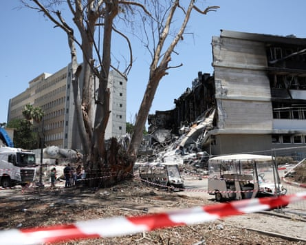

Before Israel launched its war on Iran last month, its security service uncovered an extensive network of its own citizens spying for Tehran – on a scale that has taken the country by surprise.
Since Iran’s first missile barrage on Israel in April 2024, more than 30 Israelis have been charged with collaboration with Iranian intelligence.
In many cases, the contacts began with anonymous messages offering money for information or for small tasks. The payments were then ratcheted up in line with ever more dangerous demands.
Judging by court documents, the surge in Iranian espionage efforts over the past year achieved little, falling short of Tehran’s aspirations of carrying out high-level assassinations of Israeli officials.
However, so many Israelis were prepared to carry out modest missions that the spying campaign may have been successful as a way of crowdsourcing data on strategically important sites that would later become targets of Iranian ballistic missiles.
Meanwhile, Israel spied on Iran to devastating effect, allowing the Mossad to locate and assassinate much of Iran’s high command and its nuclear scientists in a single instant in the early hours of Friday 13 July, among many other targets.
Since the war began, the Iranian regime has arrested more than 700 people accused of spying for Israel, according to the Fars news agency. But the trials have been secret, and in at least six cases led to summary executions, making it impossible to judge how much of the alleged network is real and how much a figment of official hysteria.
By contrast, in the case of the Israelis accused of spying for Iran, the prosecution has filed detailed indictments. Though there has only been one conviction so far from the recent wave of arrests, leaving individual guilt to be assessed, a clear picture has emerged from court documents of how Iran set about casting a wide net for potential agents.
It typically began with a text message from an anonymous sender. One such message, from the sender “news agency”, asked: “Do you have any information about the war? We are ready to buy it.” Another, sent by “Tehran-Quds” (Tehran-Jerusalem) to a Palestinian Israeli citizen, was more overt, saying: “A free Jerusalem unites Muslims. Send us information about the war.”
The message included a link to the Telegram app, where a new dialogue would begin, sometimes with someone using an Israeli name, with an offer of money for apparently simple errands. If the recipient expressed interest, they would be advised by their new mystery contacts to set up PayPal and an app for receiving funds in cryptocurrencies.
In the case of one suspect arrested on 29 September, the first task was to go to a park and check if a black bag had been buried in a certain spot, for a payment of nearly US$1,000 (£730). There was no bag, and the recruit sent a video to prove it.
He was later assigned other jobs that involved handing out leaflets, hanging up posters or spraying graffiti, most with slogans denigrating Benjamin Netanyahu, such as “We are all together against Bibi” (Netanyahu’s nickname) or “Bibi brought Hezbollah here” or “Bibi = Hitler”.
The next stage entailed taking photos. An Israeli of Azeri heritage was hired to photograph sensitive facilities around the country and seems to have turned it into a family business, getting his relatives to take shots of the port facilities in Haifa (which later would be hit by Iranian missiles in this month’s 12-day war), the Nevatim airbase in the Negev (struck in a salvo in October), as well as Iron Dome missile defence batteries across the country, and the Glilot military intelligence headquarters north of Tel Aviv.
Israel’s Iron Dome system fires to intercept missiles over Tel Aviv.Photograph: Léo Corrêa/AP
The same recruit who went to look for the black bag was asked to photograph the home of a nuclear scientist working at the Weizmann Institute. Israel’s premier scientific centre was the object of keen Iranian interest. Over the 15 years leading up to the war this month, five Iranian nuclear scientists were killed, almost certainly by the Mossad. In a long struggle over whether Israel would maintain its monopoly over nuclear weapons in the Middle East, Tehran wanted to strike back.
Iran struck the Weizmann Institute with ballistic missiles in the 12-day war, and it seems likely that the photos taken by its agents helped with targeting. The attempt to kill its scientists was a failure, however. In fact, neither Iran’s ministry of intelligence and security nor its Revolutionary Guards appear to have succeeded in assassinating any of their targets in the long shadow war.
While the Mossad relied on infiltrating a cadre of highly trained operatives into Iran, the approach taken by Iranian intelligence was to test how far their green recruits would be prepared to go. Yossi Melman, an Israeli intelligence expert, quoted a Shin Bet official as describing it as a “spray-and-pray approach, which seeks to develop a handful of high-quality recruits by making low-stakes investments in many others”.
Once they had carried out simple tasks such as putting up posters and taking pictures, the recruits were asked to do more for more money. Having photographed the home of a nuclear scientist from the Weizmann Institute, one recruit was offered $60,000 to kill the scientist and his family and burn down their house.
According to the indictment, the agent accepted and went about hiring four local toughs, all Palestinian Israeli citizens. On the night of 15 September, this would-be hit squad turned up at the gates of the Weizmann Institute, but they did not get past the security guard and meekly drove away.
Weizmann Institute buildings were left in ruins after the Iranian missile strike.Photograph: Violeta Santos Moura/Reuters
The day after that fiasco, the Iranian handlers told the recruit to go back to the Weizmann and take more photos. With the advantage of being an Israeli Jew arriving in daylight, he managed to talk his way past the security guards and filmed the scientist’s car. He was paid $709 and asked if he would attach a GPS device to the car. He refused.
This would be a pattern that repeats again and again in the indictments. Though the Iranian recruiters proved effective at finding plenty of Israelis ready to take photographs and distribute leaflets for Iranian money, the handlers in Tehran seem to have been in too much of a hurry to cultivate long-term agents.
Several were abruptly asked, only a few days after completing their first tasks, whether they would try to assassinate high officials. The Azeri group were asked to find a hitman but refused. The same recruit who refused to place a GPS tracker on a scientist’s car was asked days later if he might consider throwing a petrol bomb at Netanyahu’s vehicle.
Only one of the suspects has so far been convicted and jailed, after confessing to the charges against him.
Million-dollar demand
When Mordechai “Moti” Maman, 72, was approached by Iranian intelligence in spring last year, he was recently married to a much younger Belarusian woman, and in need of funds after the failure of several business ventures.
Maman had spent some years in Samandağ, in southern Turkey, and in April, he contacted two businessmen brothers he knew there to see if they had any money-making ideas. The brothers said they had a lucrative business partnership with an Iranian acquaintance named Eddie importing dried fruit and spices and suggested Maman should meet him.
In April, Maman flew to Samandağ via Cyprus, but Eddie sent two colleagues in his place, claiming he was not able to leave Iran for bureaucratic reasons. The next month, the Israeli was invited back to Turkey, to the town of Yüksekova in the far south-east, where he stayed in a hotel room paid for by Eddie.
Once more, Eddie said he was unable to cross into Turkey, but he told Maman there was a way to smuggle the Israeli into Iran. He agreed and on 5 May he made the crossing concealed in a truck.
Eddie and a second Iranian official met Maman in a luxury hotel inside Iran and made him an offer of thousands of dollars for three tasks. He was to leave money or guns at designated locations in Israel; he was to take photos of crowded places; and he was to pass on threats to other agents, specifically Israeli Palestinians, who had “received funds from Iran for carrying out hostile missions, but had not actually carried out their missions”.
Maman said he would think about it and was smuggled back into Turkey. Back in Yüksekova, he was handed $1,300 in cash as partial payment for making the trip.
In August, Maman was back in Turkey and was once more smuggled over the border to meet Eddie and his associate. This time the tasks were more daunting. The Iranians offered $150,000 for killing any of Netanyahu, Ronen Bar, the head of the Shin Bet, or Yoav Gallant, then the defence minister.
Benjamin Netanyahu and Yoav Gallant last October.Photograph: Amir Cohen/Reuters
According to the prosecution, Maman said he had underworld connections who might be able to get the job done, but he wanted $1m. That was too high for the Iranians who suggested a lesser target, the former prime minister Naftali Bennett, for $400,000. Maman allegedly stuck to his million-dollar demand and the talks adjourned without agreement.
He was paid $5,000 and flew back to Cyprus and then, on 29 August, on to Tel Aviv, where Shin Bet officers were waiting for him.
On 29 April, Maman was sentenced to 10 years in prison after pleading guilty to charges of contact with a foreign agent and unauthorised entry into an enemy state. His lawyer, Eyal Besserglick, described the sentence as excessive and has appealed.
Besserglick said Maman believed until the last moment that Eddie was no more than an Iranian businessman dealing in raisins and spices, and he was unaware when he was being smuggled onboard a truck that he was being taken into Iran. He denies Maman asked for $1m, arguing that his client ultimately had to appear to go along with the Iranian plots, out of fear that a sudden refusal would get him killed.
“What would have been better? If he had been kidnapped in a van or maybe been murdered?” Besserglick told the Guardian. He said Maman had been beaten up in prison and kept in a filthy cell with excrement smeared on the walls.
“The mistake he made is serious,” the lawyer said. “But he should not die for that mistake, because in the end there will be no one to punish.”
Bayan Rabee contributed reporting to this article